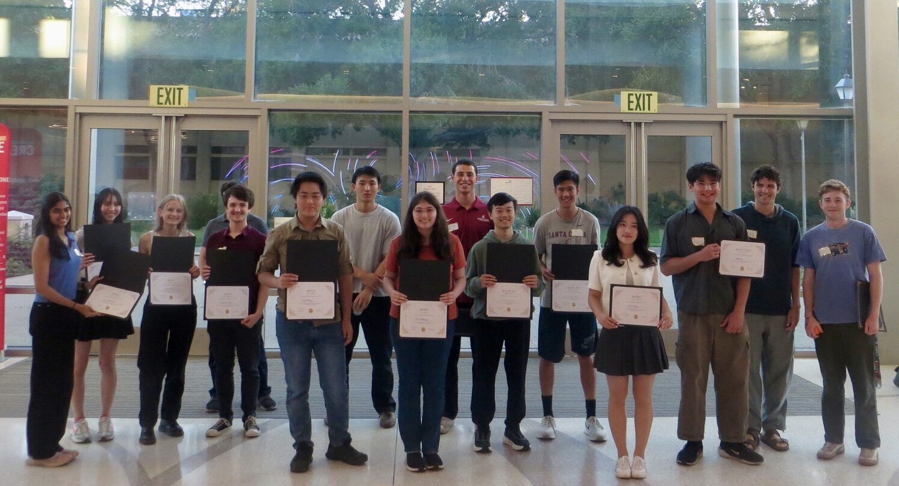
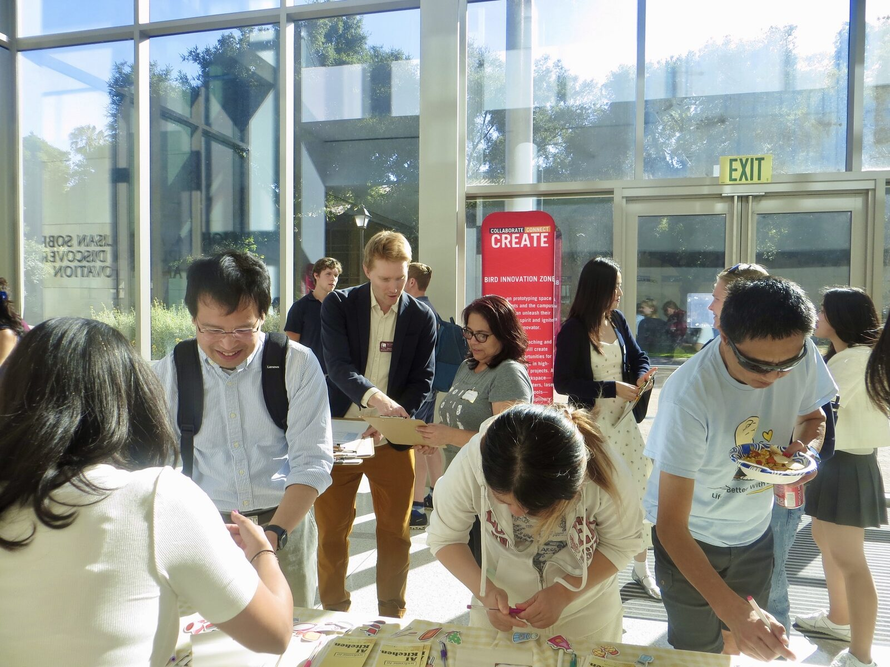
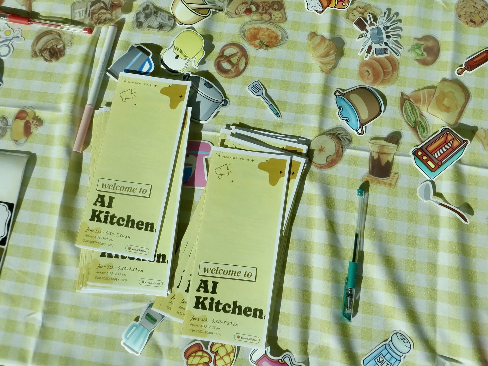
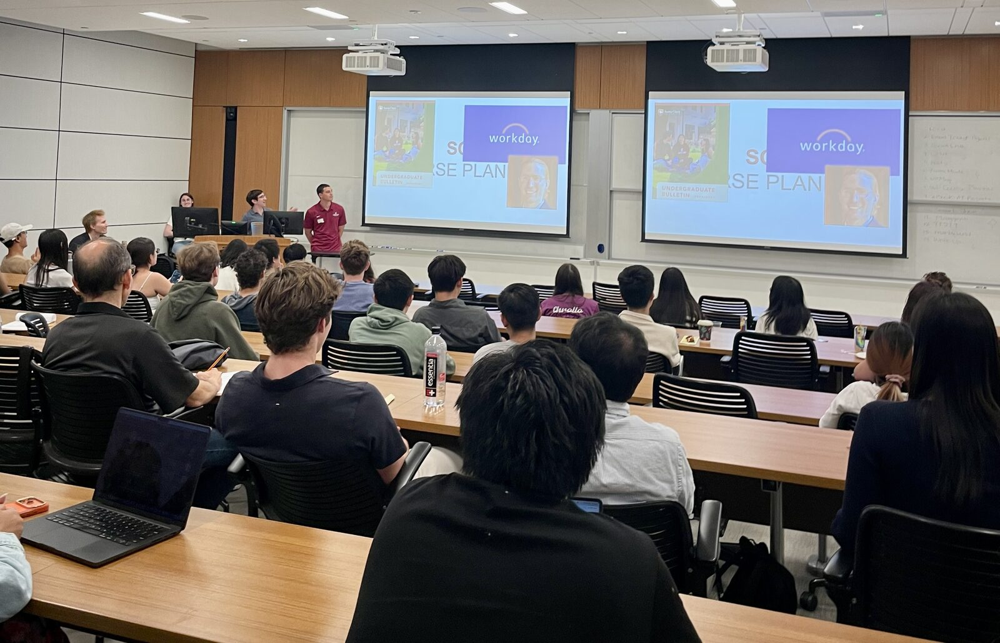
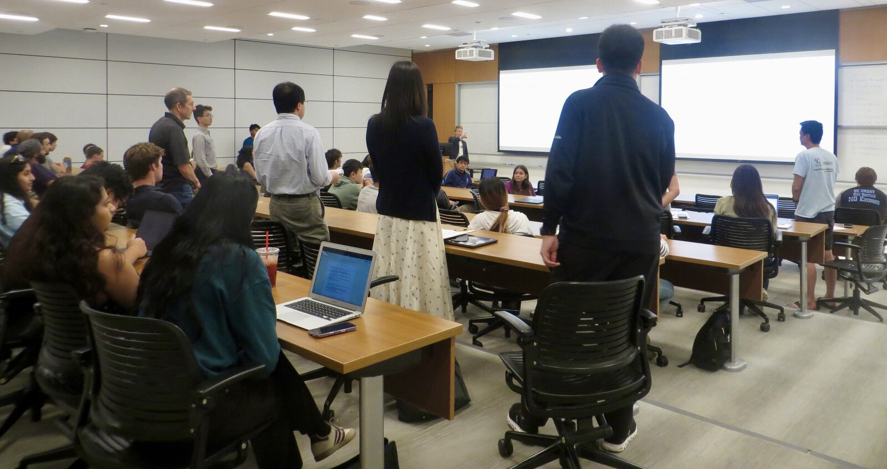
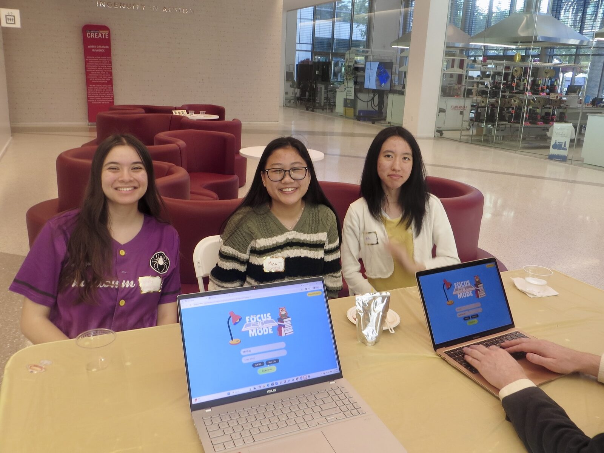
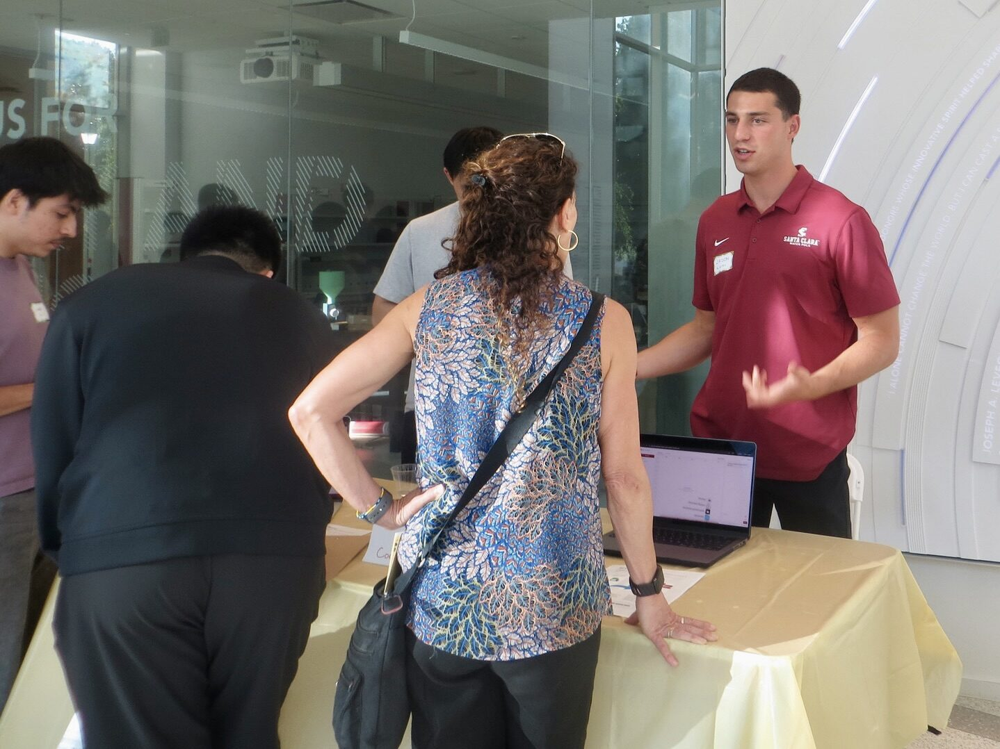
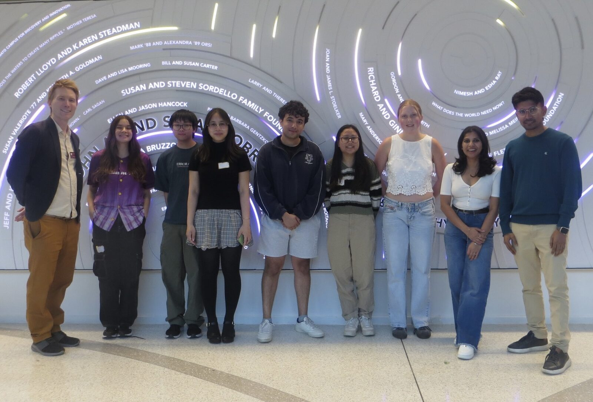

Demo Night Recap
Fifteen student teams showed a full quarter of work in one evening, and six took home awards.

On Friday, June 5, the SCDI North Lobby turned into a gallery. Fifteen student teams set up laptops on yellow-clothed tables, opened their demos, and spent two hours answering the one request every visitor brought: show me. AI Demo Night brought together the CSEN 174 senior design course and the AI Kitchen for a joint showcase, capped by six awards at the end of the night.
The night opened with 90-second pitches from every team in SCDI 1302, then moved to the open gallery. Guest speaker Jay Prakash Thakur, a Senior AI/ML Engineer at Microsoft and a member of SCU's CSE Industry Advisory Board, joined for a talk on building and scaling AI agents.




The winners
Eight industry and faculty judges scored every project across six categories, with one prize per team. The board:
Code organization, architecture clarity, and engineering rigor.
A clear one-sentence story and a 60-second elevator: who it is for, what it solves, what makes it different.
A working walkthrough that holds up when a visitor says "show me."
Easy to understand and use without instructions: clear hierarchy, intuitive flow, considered accessibility.
AI tools visibly raised the ceiling on what the team shipped and how they built it.
A novel problem, approach, or population that could become a research contribution.
The lineup
All fifteen teams, in the order they pitched:
- Lora: fine-tuning open-source models.
- Email Triage Agent: AI inbox triage for entrepreneurs, prioritizing leads and drafting replies.
- SocialCRUX: an agent that audits sites for accessibility, catching WCAG issues other tools miss.
- Orbit: a hands-free AI audio tour guide for exploring new places.
- Roots: turns saved Reels and TikToks into plans and calendar events.
- Focus Mode: a Chrome extension that blocks distracting sites and shows you where your focus goes.
- GitMap: interactive architecture maps of any GitHub repo.
- SCU Course Planner: suggests your optimal SCU courses from transcript and ratings.
- eBook: AI Projects: ten exercises that build AI skills through parables on being human.
- up-to: broadcast a hangout invite, and whoever is free jumps into the plan.
- Smart Shop: finds the cheapest nearby store for your grocery list.
- Playgent: an agent that learns from games and puzzles, then out-negotiates other models.
- TTSTT: a Discord bot that reads chat aloud in custom voices.
- marblebuild: a sandbox game built with the help of agentic AI.
- Write Up: a writing mentor that profiles your habits and explains your errors.

One floor, fifteen demos
Gallery format put every project on the same floor. Visitors roamed table to table, tried demos, and asked the makers their questions, and the teams traded notes with each other through the evening.
Thanks to our judges for the careful scoring: Jay Prakash Thakur, Boli Fang, Luis Sarmenta, Kiki Zhang, Alan Louie, Lawrence Liu, Javier Suh, and Dr. Carmina Mendoza.


Want to cook next quarter?
Many of these projects started as a Friday afternoon at an AI Kitchen Taste Test. Drop in, find a problem you care about, and pitch a Slow Roast. No application, no code required.
Get Involved →